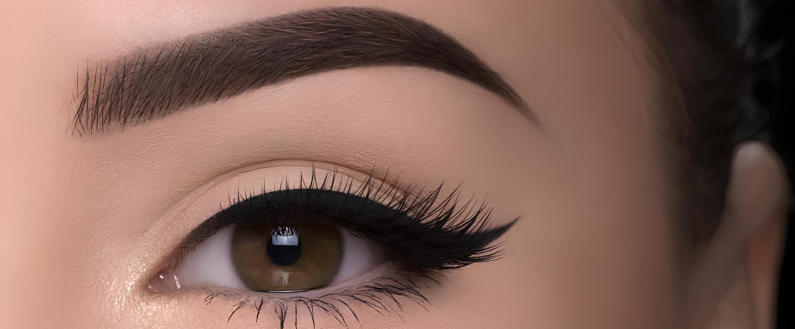

Micropigmentação

Alongamento de Unha
Quem Somos


A micropigmentação de sobrancelha é uma técnica super popular pra quem quer da um up no visual das sobrancelhas sem ter que passar horas desenhando com o lápis ou sombra. Ela consiste em aplicar pigmento na pele, desenhando fios ou criando um sombreamento que dá um efeito natural e bem definido.
O alongamento de unhas é uma técnica que aumenta o comprimento das unhas naturais, ideal para quem quer unhas longas e bonitas, mas não consegue deixá-las crescer de forma natural. Existem várias técnicas de alongamento, sendo as mais populares:Unha de Gel na Tips,esmaltação em gel,alongamento com fibra de vidro,Unha de Acrílico.
Micropigmentação